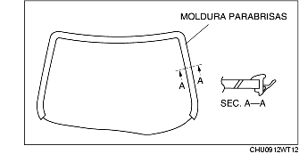

INSTALACION PARABRISAS
B3E091263900W02
-
Atención
-
• Usar una navaja con las manos desnudas puede causar heridas. Llevar siempre unos guantes cuando se utilice una navaja.
-
Advertencia
-
• Una instalación adecuada del parabrisas puede ser complicada si la masilla está agrietada o el cristal está salido debido a la presión de aire cuando la puerta se abre/cierra con todos los cristales cerrados. Dejar todas la ventanillas abiertas hasta que el parabrisas se haya instalado por completo.
1. Eliminar la vieja masilla impermeable con una navaja y dejar una capa de 1-2 mm (0,040,07 in) de espesor de masilla impermeable alrededor del perímetro del bastidor.
2. Si en cualquier punto la masilla impermeable ha sido eliminada completamente, desengrasar y aplicar una capa de fondo y dejar que seque durante aprox. 30 minutos. Luego aplicar 2 mm (0,08 in) de espesor de masilla impermeable.
3. Limpiar y desengrasar un área de aprox. 50 mm (1,97 in) alrededor del perímetro del parabrisas y de la superficie de fijación en la carrocería.
4. Si se instala un parabrisas ya utilizado, llevar a cabo el siguiente procedimiento:
-
(1) Poner las clavijas en las posiciones que fueron marcadas durante la remoción.
-
(2) Instalar la moldura del parabrisas.

5. Aplicar una capa de fondo para cristales en el cristal y capa de fondo para la carrocería en la carrocería y en la moldura, luego dejar que se seque durante aprox. 30 minutos.
-
Advertencia
-
• Mantener el área libre de suciedad y grasa, y no tocar la superficie. De lo contrario, la capa de fondo puede no fijarse adecuadamente a la superficie del cristal y de la carrocería, causando pérdidas.

6. Aplicar masilla impermeable en la superficie del cristal como se muestra en la figura.
7. Insertar las clavijas de posición a la carrocería, luego instalar el parabrisas.
8. Presionar las clavijas del parabrisas y enganchar las lengüetas al cuerpo.
9. Presionar sobre el perímetro completo del cristal para que la distancia del borde de la moldura esté conforme a las especificaciones.
10. Instalar los siguientes componentes:
-
(1) Luz de lectura (Véase REMOCION/INSTALACION LUZ DE LECTURA).
-
(2) Revestimiento montante A (Véase REMOCION/INSTALACION REVESTIMIENTO MONTANTE A).
-
(3) Parasol (Véase REMOCION/INSTALACION PARASOL).
-
(4) Sensor lluvia (vehículos con sistema limpiaparabrisas automático) (VéaseREMOCION/INSTALACION SENSOR LLUVIA).
-
(5) Espejo retrovisor interior (Véase REMOCION/INSTALACION ESPEJO RETROVISOR INTERIOR).
-
(6) Rejilla del capó (Véase REMOCION/INSTALACION REJILLA DEL CAPO).
-
(7) Brazo y escobilla limpiaparabrisas (Véase REMOCION/INSTALACION BRAZO Y ESCOBILLA LIMPIAPARABRISAS).
11. Dejar que la masilla impermeable se seque completamente.
-
Tiempo de endurecimiento masilla impermeable: 24 horas